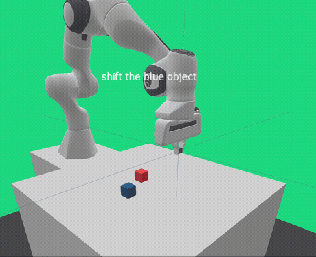

Dr. Frank Röder
I am a member of the Institute for Data Science Foundations at the Hamburg University of Technology, where I research sequential decision-making, world modeling, and causality.
I currently work as a postdoctoral researcher under the supervision of Prof. Nihat Ay on embodied intelligence and teach mathematics, machine learning, and reinforcement learning.
I received my Dr. rer. nat. in reinforcement learning and language grounding in robotics under the supervision of Dr. Manfred Eppe (2021–2025) and Prof. Stefan Wermter (2021–2022).
If you are looking for thesis supervision, please apply via our institute homepage.

Selected Publications

Conference on Neural Information Processing Systems (NeurIPS) 2025
We show that dynamics-aligned representations improve zero-shot generalization for contextual world models. DALI integrates within the Dreamer architecture to infer latent context representations from interactions, enabling adaptation to unseen environmental conditions without costly retraining.

Conference on Neural Information Processing Systems (NeurIPS) 2025; also International Conference on Machine Learning (ICML) 2025 Workshop Track CODEML (Spotlight)
An improved and standardized reinforcement learning benchmark suite for fair evaluation and comparison of multi-task and meta RL algorithms.
Dissertation

Doctoral Thesis, Hamburg University of Technology (TUHH), 2026
Reviewers: Prof. Dr. rer. nat. Nihat Ay, Prof. Dr. Pierre-Alexandre Murena
DOI RL Algorithms Robotics Simulation
Language is the primary medium for instructing embodied agents, yet robots struggle to ground natural language robustly under conversational noise such as disfluencies and polysemy. This thesis studies these limitations in a sparse-reward, language-conditioned reinforcement learning setup, using linguistic feedback and egocentric speech to learn from failure in hindsight — relabeling unintended deviations as alternative goals and predicting goal commands that match the observed behavior. A second pillar tackles action correction, resolving ambiguous or miscommunicated instructions through further verbal input and a context-sensitive hindsight method that models goal uncertainty.
Activities & News
- Feb 2026 Defended my PhD (Dr. rer. nat.) on 10.02.2026.
- Dec 2025 Attended NeurIPS 2025 in San Diego, CA, with two accepted papers.
- Sep 2025 Attended the Conference on Mathematics of Machine Learning 2025 at our institute in Hamburg.
- Feb 2025 Attended the Guided Self-Organization Conference (GSO-2025) in Tübingen.
- Feb 2025 Submitted my PhD dissertation.
Research Experience
- 06/2026 – present Postdoctoral Researcher at the Institute for Data Science Foundations, Hamburg University of Technology.
- 04/2022 – 06/2026 Ph.D. Student (Dr. rer. nat.) at the Institute for Data Science Foundations, Hamburg University of Technology.
- 01/2021 – 03/2022 Ph.D. Student at the Knowledge Technology Group, University of Hamburg.
- 10/2019 – 09/2020 Student Assistant at the Department of Neurology, University Medical Centre Hamburg-Eppendorf.
Teaching
- SS 2026 Tutor, Deep Reinforcement Learning Seminar, Institute for Data Science Foundations
- WS 2025/26 Lecturer, Machine Learning II, Institute for Data Science Foundations
- WS 2025/26 Lecturer, Reinforcement Learning, Institute for Data Science Foundations
- SS 2025 Tutor, Mathematics II, Institute for Mathematics
- WS 2024/25 Tutor, Mathematics I, Institute for Mathematics
- SS 2024 Tutor, Introduction to Reinforcement Learning Seminar, Institute for Data Science Foundations
- SS 2023 Tutor, Introduction to Reinforcement Learning Seminar, Institute for Data Science Foundations
- SS 2022 Supervisor, Neural Networks Seminar, Knowledge Technology Group
- WS 2021/22 Supervisor, Bio-Inspired Artificial Intelligence Seminar, Knowledge Technology Group
- SS 2021 Supervisor, Neural Networks Seminar, Knowledge Technology Group
- WS 2020/21 Supervisor, Bio-Inspired Artificial Intelligence Seminar, Knowledge Technology Group
Tools and Projects
Music
Industry Experience as Working Student
- 05/2018 – 08/2019 Business Intelligence / Developer at Peaks & Pies
- 07/2017 – 04/2018 Fullstack Software Developer at Bellmorgen Vorsorge GmbH
- 04/2017 – 07/2017 Software Developer at the Deutsche Gesellschaft für Privatpatienten